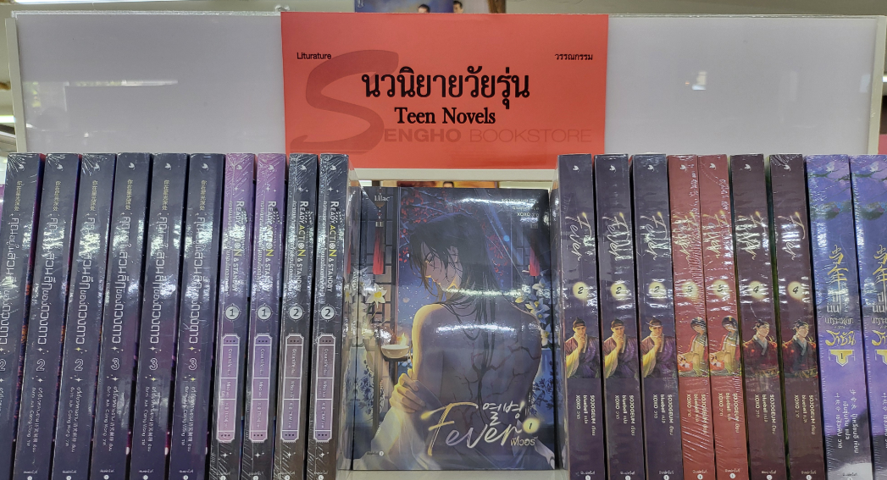
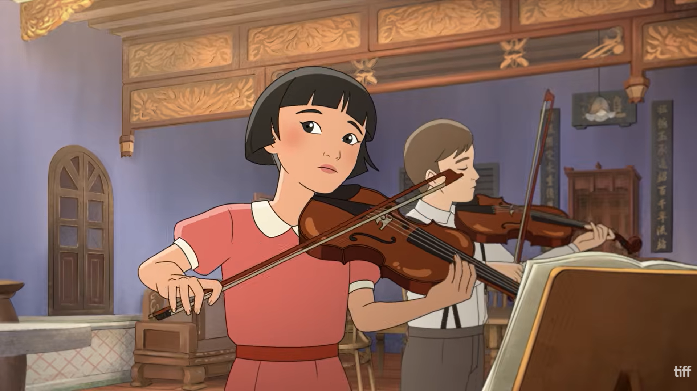
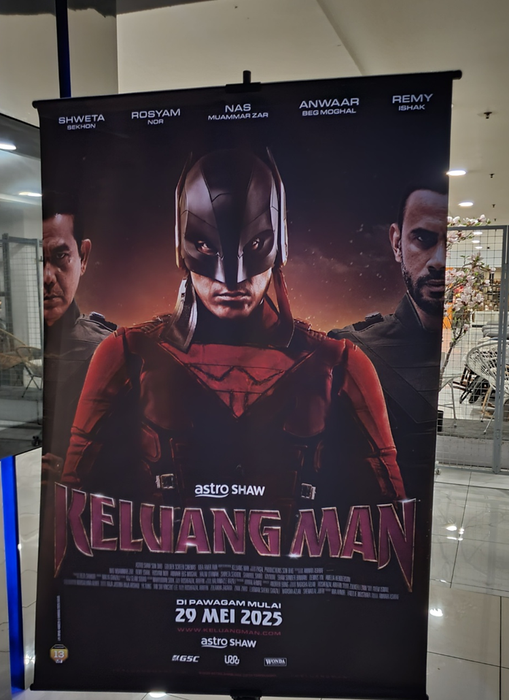

2010년대 후반부터 지금까지 한류 해외통신원으로 활동하며 동남아시아에서 한국 콘텐츠가 소비되고 받아들여지는 과정을 지켜봐 왔다. 그중에서도 한류의 확산이 새로운 전환점을 맞이한 시기를 꼽으라면 단연 코로나19 시기다.
2020년대 초기 이동 제한과 오프라인 엔터테인먼트 공간의 폐쇄로 넷플릭스 등 온라인동영상서비스(OTT) 플랫폼의 영향력이 확대됐다. 특히 <오징어 게임(Squid Game, 2021)>을 비롯한 한국 콘텐츠가 세계적인 성공을 거두면서, 자국 문화 보호를 강조해 온 말레이시아에서도 한국 콘텐츠를 수용하고 그 성공 요인을 배우려는 움직임이 나타났다. 이는 코로나19가 단순히 한국 콘텐츠의 확산을 촉진한 시기를 넘어 동남아시아 각국이 자국 콘텐츠의 경쟁력과 문화산업의 방향을 재고하는 계기가 됐음을 보여준다.
코로나19 이후 글로벌 플랫폼 간 경쟁이 심화되고 인공지능(AI) 등 관련 기술이 발전하는 동시에 동남아시아 각국의 콘텐츠 제작 역량을 강화하고 자국 문화산업을 육성하려는 움직임도 확대됐다. 이에 따라 이 지역은 글로벌 콘텐츠 소비 시장이 아니라 다양한 국가의 콘텐츠가 경쟁하는 동시에 자체 콘텐츠를 생산하고 세계 시장으로 확장하는 공간으로 변화하고 있다.
오늘날 동남아시아 콘텐츠 시장을 이해하는 데 두 가지 개념이 중요하다. 각국의 역사와 언어, 문화적 경험에 뿌리를 둔 고유성(Originality)과 서로 다른 문화적 요소를 결합해 자신들만의 방식으로 재창조하는 혼종성(Hybridity)이다. 이 글에서는 동남아시아를 둘러싼 두 가지 개념을 중심으로 콘텐츠 소비 지형의 변화를 살펴보고자 한다.
동남아시아 콘텐츠 시장의 두드러진 변화는 한국 콘텐츠가 상대적으로 덜 다뤄 온 소재와 장르를 앞세운 콘텐츠들이 새로운 선택지로 부상하고 있다는 점이다. 동남아시아 각국에서 자국의 문화와 사회적 맥락을 반영한 콘텐츠가 제작되고 역내 시장에서 소비되는 흐름이 나타나고 있다. 특히 국가마다 종교와 사회적 가치관, 문화적 규범이 다른 만큼 이러한 차이가 콘텐츠의 소재와 장르를 차별화하는 요인으로 작용한다.
대표적인 사례가 태국의 BL(Boys' Love)과 GL(Girls' Love) 드라마다. 이슬람 문화의 영향력이 강한 말레이시아, 인도네시아, 브루나이와 비교해 상대적으로 성소수자 콘텐츠에 개방적인 태국에서는 BL과 GL이 현지 콘텐츠 산업의 독자적인 경쟁력으로 발전했다. 2020년 공개된 <보이프렌즈(2gether)>는 태국 BL 드라마의 국제적 인지도를 높인 대표적인 작품으로, 이후 관련 작품들은 온라인 플랫폼과 글로벌 팬덤을 기반으로 해외 시청자와의 접점을 확대해 왔다. GL 장르 역시 <갭 더 시리즈(GAP the Series, 2022)>, <더 시크릿 오브 어스(The Secret of Us, 2024)>, <핀팍(The Loyal Pin, 2024)> 등의 작품을 통해 성장했다.

[그림 1] 태국의 BL 콘텐츠
(출처: 저자 촬영)
인도네시아에서는 자국의 설화와 도시 전설을 활용한 호러 콘텐츠가 또 다른 경쟁력을 보여준다. 인도네시아 OTT VISION+의 오리지널 시리즈 <포테(POTE, 2026)>와 넷플릭스에서 공개된 <알라스 로반(Alas Roban, 2026)>은 지역 전승과 특정 장소에 얽힌 이야기를 현대적인 영상 콘텐츠로 재구성한 사례다. <포테>는 동자바주 바웨안섬의 귀신 설화인 오렝 포테(Oreng Pote)를, <알라스 로반>은 네덜란드 식민지 시기 강제 노역에 동원된 희생자들과 관련된 귀신 이야기를 소재로 삼았다. 이들 작품은 호러 장르에 강점을 지닌 인도네시아의 토착 신앙, 역사와 장소를 이야기의 중심에 배치해 차별화된 경쟁력을 확보했다.
말레이시아 역시 자국 콘텐츠의 고유성과 산업적 경쟁력을 강화하고 있다. 이는 무엇이든 해낼 수 있다는 자신감과 의지를 뜻하는 말레이시아 특유의 ‘볼레(Boleh; 할 수 있다)’ 정신과도 맞닿아 있다. 2026년 4월 9일 말레이시아 영화진흥위원회(FINAS)는 역사와 문화를 통해 국가 정체성을 드러내고 애국심을 고취하는 자국 작품을 지원하는 1,000만 링깃(약 33억 원) 규모의 ‘시트라 특별기금(National Citra Production Special Fund)’을 출범했다. 자국의 문화적 정체성을 콘텐츠 제작의 자산으로 활용하고 영상산업의 경쟁력을 높이려는 정책적 시도다.
싱가포르도 자국의 역사적 경험을 콘텐츠로 재해석하고 있다. 애니메이션 영화 <더 바이올리니스트(The Violinist, 2026)>는 2015년 제작된 동명의 역사 단편 애니메이션을 바탕으로, 1940년대부터 일본의 침공과 말레이시아로부터의 분리, 1960년대 독립에 이르기까지 싱가포르의 국가 형성 과정을 담아냈다. 작은 도시국가가 독립 이후 국가 정체성을 구축해 온 역사와 문화적 경험을 애니메이션으로 표현했다는 점에서 싱가포르 콘텐츠만의 고유성을 보여주는 사례다.

[그림 2] 싱가포르 애니메이션 영화 <더 바이올리니스트>의 한 장면
(출처: TIFF 유튜브 채널(@TIFF) 화면 갈무리)
동남아시아 콘텐츠는 각국의 문화와 소재, 장르를 바탕으로 경쟁력을 확보하는 동시에 서로 다른 문화적 요소를 결합하고 재해석하며 혼종성을 형성한다. 타문화를 유연하게 수용하면서도 자국의 정체성을 유지하고, 다양한 문화적 층위가 중첩·공존하는 동남아시아의 특성을 반영해 해외 콘텐츠의 서사와 제작 방식을 현지 맥락에 맞게 재구성한다. 이 과정에서 자국의 문화적 특성과 산업적 역량을 결합하며 콘텐츠의 경쟁력을 높이고 있다.
이러한 흐름에서 주목할 점은 동남아시아가 한류 콘텐츠를 적극적으로 재해석하고 활용하고 있다는 것이다. 동남아시아는 1990년대 후반부터 2000년대 초반까지 <겨울연가(Winter Sonata, 2002)>, <대장금(Jewel in the Palace, 2003)>과 같은 한국 드라마를 중심으로 한류가 확산된 주요 지역으로, 「2026 해외한류실태조사」에 따르면 여전히 한국 문화콘텐츠 소비 비중이 높은 지역으로 나타났다. 동남아시아는 초기 한류의 중심이었던 한국 드라마를 현지의 문화적 맥락에 맞게 수용·재해석했으며, 이는 오늘날 콘텐츠 생산의 토대로 이어지고 있다.
예를 들어 말레이시아에서는 OTT 플랫폼 뷰(Viu)가 한국 드라마 IP를 활용한 현지 오리지널 콘텐츠 제작을 추진해 왔다. 2019년 OCN 드라마 <블랙(Black, 2017)>을 리메이크해 아시아 17개국에 공개했으며, 원작의 저승사자를 말레이 민속신앙 속 초자연적 존재인 오랑 부니안(Orang Bunian)으로 대체해 현지 문화적 맥락을 반영했다. 2023년 제작된 MBC 드라마 <더블유(W: Two Worlds, 2016)>의 말레이시아 리메이크작 역시 현지화 과정에서 말레이시아의 이슬람 문화와 종교적 맥락을 고려했다. 특히 주인공들의 키스 장면을 둘러싼 일부 시청자들의 비판은 외래 콘텐츠의 표현 방식과 현지 사회문화적 규범 사이의 긴장을 보여주었다. 제작진이 이에 사과하고 향후 더욱 신중하겠다는 입장을 밝힌 것은 이러한 문화적 차이를 조율하려는 과정으로 볼 수 있다. 이러한 사례들은 해외 콘텐츠의 서사와 표현 방식을 현지 맥락에 맞게 재구성하면서도 다양한 문화적 요소를 수용하고 조정하는 동남아시아의 문화적 특성을 보여준다.
또한 동남아시아 콘텐츠 산업은 할리우드식 프랜차이즈 전략과 세계관 확장 방식을 적극적으로 수용하고 있다. 예를 들어, 2024년 12월 말레이시아 미디어 그룹 아스트로 쇼(Astro Shaw)는 마블 시네마틱 유니버스(MCU)와 같은 지적재산권(IP) 유니버스 구축 계획을 발표했으며, 인기 애니메이션 IP를 실사 영화로 각색한 히어로물 <클루앙 맨(Keluang Man, 2025)>을 개봉했다. 이러한 제작 전략은 할리우드에 국한되지 않고 동남아시아 역내에서도 확장되고 있다. 예를 들어, 말레이시아 공포영화 <무나픽(Munafik, 2016)>의 제작사 스콥 프로덕션(Skop Production)은 인도네시아 제작사 언리미티드 프로덕션(Unlimited Production)과 협력해 인도네시아 리메이크작을 제작하고 2025년 11월 촬영에 들어갔다. 이는 할리우드식 IP 확장 및 리메이크 전략이 동남아시아 역내 문화산업의 협력과 결합하면서 새로운 콘텐츠 생산 방식으로 재구성되는 사례로, 글로벌 문화산업의 문법과 지역적 문화 요소가 결합하는 혼종성을 보여준다.

[그림 3] 히어로물 ‘클루앙 맨’ 포스터
(출처: 저자 촬영)
이 글에서는 고유성과 혼종성이라는 두 가지 개념을 중심으로 동남아시아 콘텐츠 소비 지형의 변화를 살펴보았다. 이를 통해 동남아시아를 한류에 대한 선호도와 소비 충성도가 높은 시장이나 해외 콘텐츠를 수입하는 시장으로만 이해하기 어렵다는 점을 알 수 있었다. 동남아시아는 불교와 이슬람 등 다양한 종교문화권이 공존하며, 국경을 넘어 유사한 설화와 민담을 공유하는 지역이다. 또한 오랜 기간 교역과 무역의 중심지로서 다양한 문화가 교류해 온 코스모폴리탄(cosmopolitan)적 성격을 지닌 공간이다. 외부 문화를 수용하는 동시에 이를 지역 고유의 문화적 특성과 결합해 온 역사적‧문화적 배경은 오늘날 콘텐츠 산업에서도 드러나고 있다.
그렇다면 동남아시아의 문화적 고유성과 혼종성의 공존은 한국 콘텐츠 산업에 어떤 시사점을 던지는가? 다시 처음의 질문으로 돌아가 보자. 동남아시아 콘텐츠 시장의 변화는 한류의 위기일까, 아니면 새로운 시대의 도래일까? 이는 한류를 넘어 보다 넓은 아시아 콘텐츠의 생산·유통 방식이 형성되는 새로운 단계의 초입으로 볼 수 있다. 그렇기에 동남아시아 콘텐츠 시장의 성장과 다변화는 한국에 위기라기보다 아시아 콘텐츠 산업 전반의 교류와 협력을 확대할 새로운 기회가 될 수 있다.
동남아시아 말레이 무슬림을 대상으로 한 문화 연구에서 한 참여자에게 “방탄소년단이 아시아를 전 세계에 알리게 되었고, 같은 아시아인으로서 자랑스럽다”는 말을 들은 적이 있다. 당시 그 이야기를 들으며 한국 콘텐츠의 성과를 한국만의 성공이 아닌 아시아의 성과로 함께 기뻐할 수 있다는 생각이 들었다. 돌이켜보면 봉준호 감독의 영화 <기생충(Parasite, 2019)>이 칸 국제영화제에서 황금종려상을 수상했을 때도 말레이시아 이웃에게 축하 인사를 듣기도 했고, 일상에서도 한국 콘텐츠를 좋아한다며 인사를 건네는 동남아시아 사람들을 만나고는 했다.
지금 동남아시아에서 나타나는 콘텐츠 시장의 변화도 이러한 관점에서 이해할 필요가 있다. 향후 동남아시아 콘텐츠 시장에서 한국 콘텐츠의 상대적 비중이 달라지더라도 이를 한류의 영향력 약화로만 해석할 필요는 없을 것이다. 한국 콘텐츠가 동남아시아의 문화적 교류와 콘텐츠 발전에 기여하는 방식은 시장 점유율만으로 설명할 수 없기 때문이다. 오히려 동남아시아 각국의 콘텐츠 산업이 성장하고 다양한 문화적 요소가 결합하면서 아시아 콘텐츠 시장 전체의 규모와 다양성이 확대되는 과정으로 볼 수 있다. 그렇기에 한국 콘텐츠의 비중 자체보다는 아시아 콘텐츠 산업 전체가 함께 성장하며 새로운 시장과 가능성을 만들어 가는 흐름에 앞으로는 주목할 필요가 있을 것이다.
참고문헌
- 홍성아(2026a). <말레이시아 영상산업의 IP 확장 사례 및 육성 정책>.
- 홍성아(2026b). <말레이시아의 한국영화 상영현황>.
- 홍성아(2026c). <싱가포르 자국영화의 해외 진출 지원을 위한 정책 거버넌스>.
- 한국국제문화교류진흥원(2026). <2026 해외한류실태조사 결과보고서(제15차) 분석편(요약편)>.
- Kihyung Bae, Hong Sungah and Lee Sungmin(2024). The Transformation of Korean Drama Discourse in Malaysia in the OTT Era, <The Asian Journal for Public Opinion Research>, 12권 3호, p.142-165.
- Khairunnisa Haji Ibrahim and Hong Sungah(2026). “Before a fan, I am a person”: How faith, fandom, and lifestage shape fan experiences of Malay Muslim Millennial(MMM) female fans of BTS in Brunei Darussalam and Malaysia. <2026 Global K-culture Conference>.